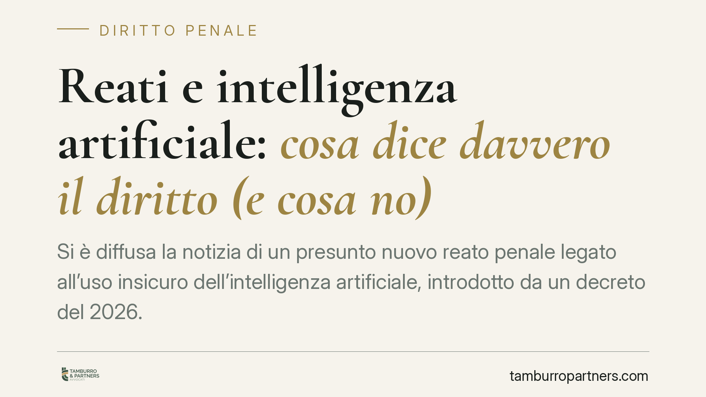

Reati e intelligenza artificiale: cosa dice davvero il diritto (e cosa no)
Si è diffusa la notizia di un presunto nuovo reato penale legato all'uso insicuro dell'intelligenza artificiale, introdotto da un decreto del 2026. La fonte citata non risulta però riscontrabile nelle banche dati ufficiali. Distinguiamo ciò che è oggi certo — la disciplina europea sull'IA — da riferimenti normativi ancora da verificare, per non alimentare false certezze giuridiche.

Una premessa doverosa sulla fonte
Circola online la notizia di un nuovo delitto di "intelligenza artificiale insicura", che sarebbe stato introdotto nel codice penale con un art. 437-bis c.p. da un D.lgs. 160/2026, in vigore dal 30 settembre 2026.
Allo stato, non siamo in grado di confermare l'esistenza né del decreto né dell'articolo così indicati. Alla data di redazione, la numerazione, l'anno e il contenuto riferiti non trovano riscontro certo nelle fonti ufficiali (Gazzetta Ufficiale, Normattiva).
Su un tema di diritto penale, la prudenza è d'obbligo: affermare che "è in vigore un nuovo reato" senza una verifica puntuale della pubblicazione in Gazzetta Ufficiale significa rischiare di diffondere una falsa informazione giuridica. Per questo trattiamo il riferimento come non verificato e invitiamo a controllarne l'effettiva esistenza prima di trarne conseguenze operative.
Cosa è invece certo: l'AI Act europeo
Esiste, questo sì, una cornice normativa consolidata: il Regolamento (UE) 2024/1689 (cosiddetto AI Act), che detta obblighi crescenti a carico di chi sviluppa, immette sul mercato o utilizza sistemi di intelligenza artificiale, con particolare rigore per quelli classificati ad alto rischio.
L'AI Act impone, tra l'altro, misure di gestione del rischio, sorveglianza umana (human oversight), tracciabilità e documentazione tecnica. Non è una norma penale: si muove sul piano amministrativo e sanzionatorio-regolatorio. Ma definisce lo standard di diligenza che, in futuro, potrebbe fare da parametro anche in sede di responsabilità civile e penale.
Il quadro penale già disponibile
Anche senza nuove fattispecie ad hoc, il diritto penale vigente non è privo di strumenti applicabili a un uso negligente della tecnologia.
L'art. 437 c.p. punisce chi omette dolosamente di collocare impianti, apparecchi o segnali destinati a prevenire infortuni sul lavoro. Accanto ai reati colposi comuni (lesioni, omicidio colposo), esso mostra come l'ordinamento sanzioni già oggi l'omissione di cautele doverose.
Sul fronte degli enti, il D.lgs. 231/2001 disciplina la responsabilità amministrativa delle società per reati commessi nel loro interesse: sanzioni pecuniarie e interdittive, con l'adozione ed efficace attuazione di un modello organizzativo (MOG) come possibile causa di esonero.
Implicazioni pratiche per imprese e manager
Per chi progetta o impiega sistemi di IA, il messaggio non cambia a seconda dell'esistenza di uno specifico reato.
Manager, direttori tecnici e progettisti occupano una posizione di garanzia: da essa deriva l'obbligo di adottare le misure idonee a prevenire danni prevedibili. In caso di contestazione, la documentazione delle scelte di sicurezza assunte prima dell'evento ha un valore difensivo concreto, perché consente di dimostrare la diligenza effettivamente osservata.
Gli obblighi dell'AIAct, inoltre, sono già una realtà con scadenze progressive: adeguarsi ora significa ridurre il rischio regolatorio e, in prospettiva, quello penale.
Cosa fare in concreto
- Mappa i sistemi di IA utilizzati o sviluppati, classificandoli per livello di rischio secondo i criteri dell'AI Act.
- Predisponi meccanismi di sorveglianza umana effettiva sui sistemi ad alto rischio, con ruoli e responsabilità individuati per iscritto.
- Aggiorna il modello organizzativo 231, valutando l'inserimento di presidi specifici sui rischi legati all'IA.
- Documenta le misure di sicurezza adottate e le valutazioni di rischio compiute: la tracciabilità è la prima linea difensiva.
- Formalizza deleghe e attribuzioni di funzioni in materia tecnica e di sicurezza, per definire con chiarezza le posizioni di garanzia.
Una nota di metodo
Sul presunto nuovo reato è opportuno attendere una verifica della fonte in Gazzetta Ufficiale prima di riorganizzare procedure interne su quella specifica base. Nel frattempo, l'adeguamento all'AI Act e il rafforzamento dei presidi 231 sono azioni utili a prescindere, perché fondate su norme certe e già vigenti.
Se è necessario un riscontro sull'effettivo stato della normativa penale in materia, è opportuno consultare le fonti ufficiali e un professionista, evitando di agire su notizie non confermate.
---
*Contributo informativo a cura di Tamburro & Partners - Avv. Giuseppe Tamburro. Non costituisce parere legale.*
Ogni condominio ha una storia a sé.
Se gestisci un'amministrazione e vuoi un confronto su una specifica questione condominiale, scrivi allo studio. Ti rispondiamo entro un giorno lavorativo.